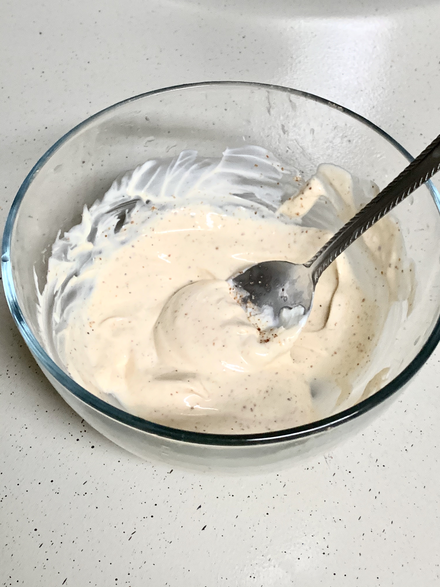

Shrimp Tacos:
- 1 lb raw shrimp, peeled & deveined
- 1 tbsp taco seasoning
- 1 tsp garlic powder
- 14 oz bag slaw or 3 cups shredded cabbage
- 1/2 small bunch cilantro, finely chopped
- Avocado oil, for frying
- Ground black pepper, to taste
- 9 corn tortillas
Shrimp Taco Sauce:
- 1/2 cup plain yogurt, 2%+ fat
- 1/4 cup mayo (I use avocado oil)
- 1 lime, juice of
- /2 tsp taco seasoning
- 1/4 tsp salt
- Pinch of cayenne
-
Preparing the shrimp tacos
#1 - In a medium bowl, add shrimp, 1 tbsp taco seasoning, garlic powder and pepper. Stir and set aside.
#2 - In a small bowl, add yogurt, mayo, lime juice, taco seasoning, cayenne and black pepper. Stir and set aside.
#3 - Preheat large ceramic non-stick skillet on high heat and add shrimp. Cook until pink on the bottom, flip and cook until no longer gray.
#4 - In a large bowl, add slaw, cilantro, salt and almost all of the sauce, reserving some for drizzling on tacos. Stir gently.

#5 - To assemble tacos, warm tortillas in a cast iron skillet on high heat for 10 seconds per side and pressing on with spatula.
Fill each tortilla with 3-4 shrimps, some slaw and drizzle with sauce. Serve immediately.